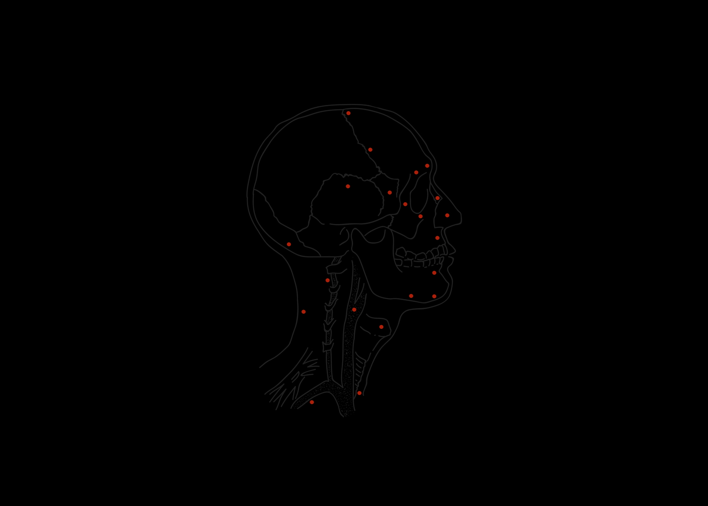

Blind Spot
Blind spot - the area in the human eye
on the retina that is not sensitive to light.
In this area, we see nothing.
(c) Wikipedia.
Contemporary society provides the state with the right to exercise force or violence through various structures and control systems: the police, the army, special services, prisons and medical institutions. This right is exclusive and legitimate.
If you look closely at the hidden areas of the state's power machinery, sometimes you can see things that go beyond the laws, ethics and humanity. These are legal gaps, zones of indistinguishability that arise at different times in different countries, when there is insufficient control by society.
In "Blind spot" project, I visualize extreme manifestations of power: violence, torture, psychological pressure, massacres. I am interested in human fragility and vulnerability to unpredictable, unlimited power. I collect a dark puzzle of the well-honed system of oppression and search for the nature of fear.
Belarus / Russia, 2015 - ...

Exhibition views

Solo exhibition
2018 / Kasarna Karlin, Prague, Czech Republic

Solo exhibition
2018 / Kasarna Karlin, Prague, Czech Republic

Solo exhibition
2017 / CECH gallery, Minsk, Belarus
List of exhibitions
- 2020 / Circulation(s) photofestival / Paris, France (upcoming)
- 2019 / ImageSingulières (IS) photofestival / Sète, France
- 2019 / Riga Photomonth photofestival / Riga, Latvia
- 2018 / Photographic Nights of Pierrevert / Pierrevert, France
- 2018 / Odessa Photo Days International Festival / Odessa, Ukraine
- 2018 / Solo exhibition at Kasarna Karlin, Prague, Czech Republic
- 2017 / Group exhibition "Compilation: Angst" / Kreativraum im Körnerpark, Berlin, Germany
- 2017 / Tbilisi Photo Festival, Night Of Photography / Tbilisi, Georgia
- 2017 / Solo exhibition at CECH gallery, Minsk, Belarus
Exhibition is printed/framed and available for rent. Located in Prague, Czech Republic.
Project presentation available by request.